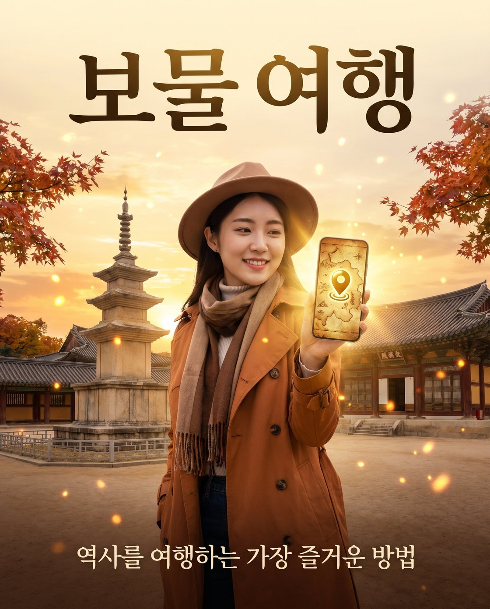
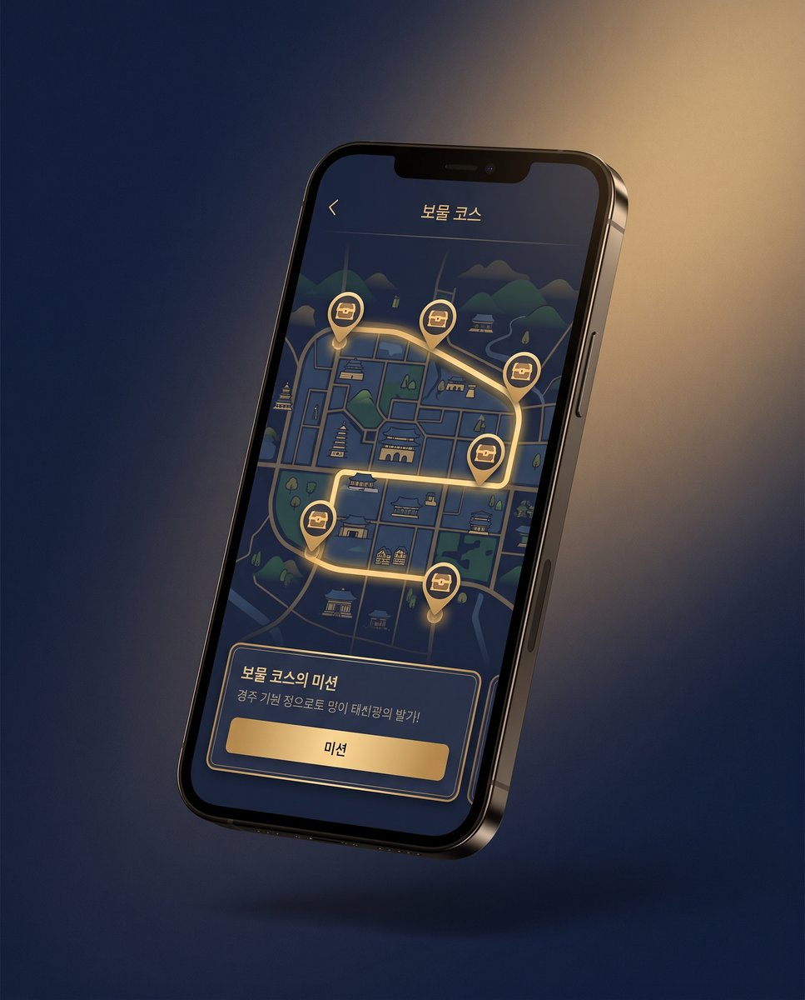
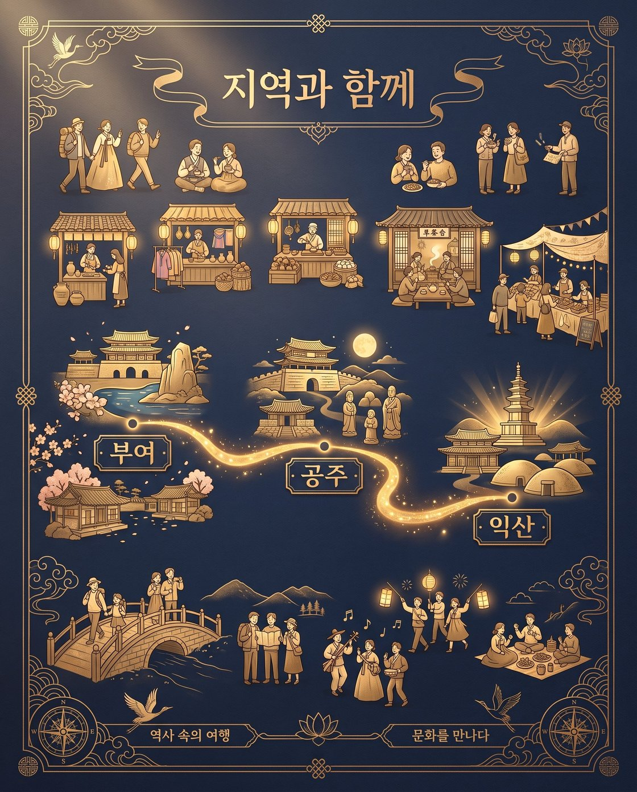
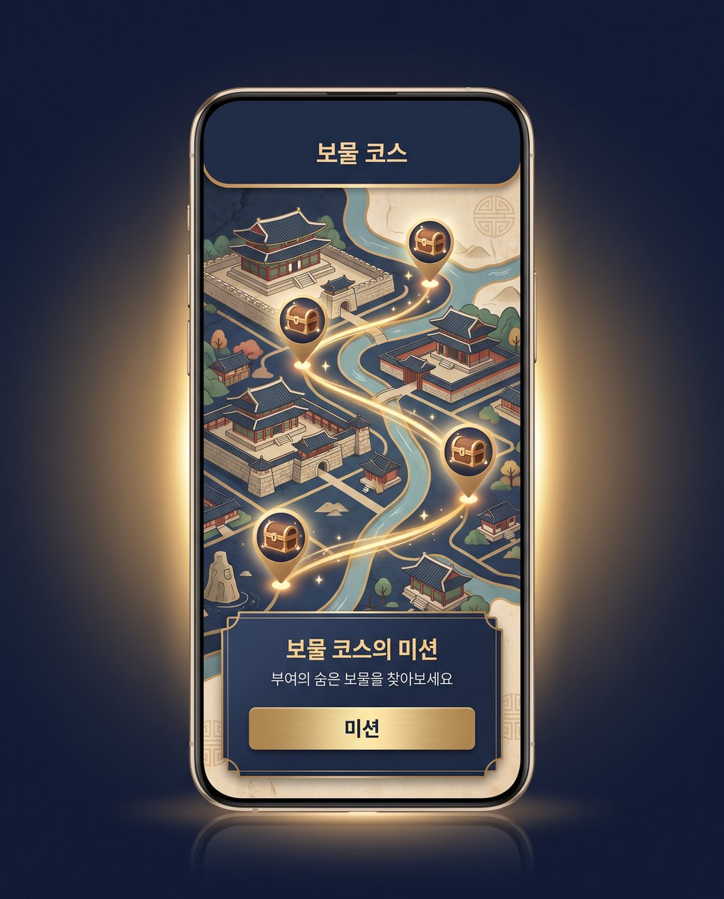
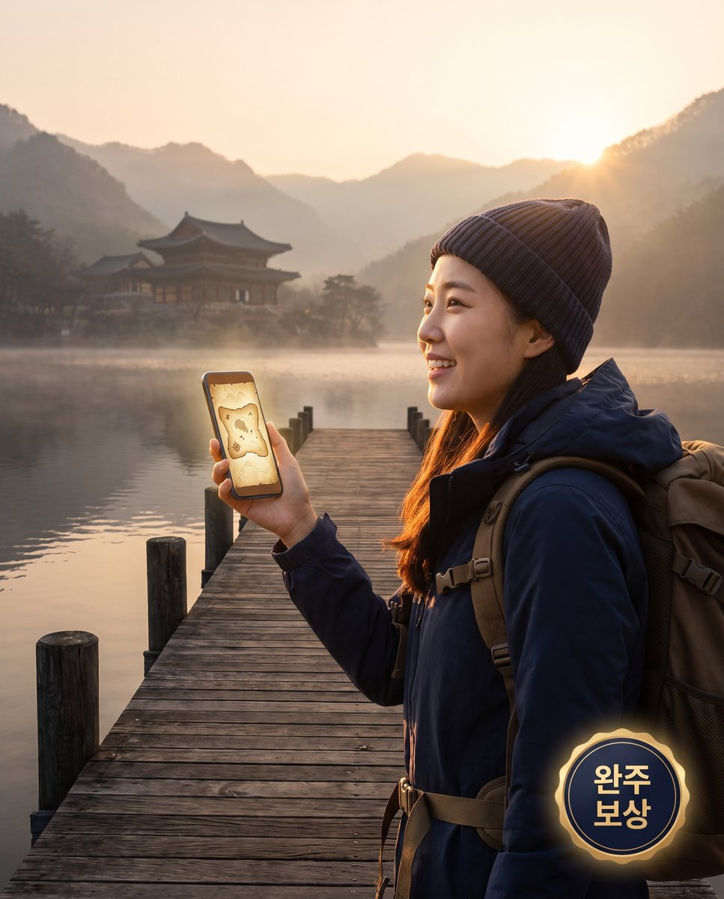

역사와 설화를 찾아 떠나는
여행
전국에 잠든 전설·설화·역사를 코스로 엮어, 이야기를 따라 걷는 새로운 여행을 제안합니다.
이야기가 있는 여행
전설이 살아 숨 쉬는 곳, 보물을 찾아 여행을 떠나요!
모든 사람에게 지식과 공부가 되는 특별한 여행.
전설이 된 코스
흩어진 이야기를 지역·테마별 코스로 묶어, 길을 따라 전설을 만납니다.
깊이 있는 경험
각 코스에 담긴 설화와 역사를 안내해, 오래 기억에 남는 하루를 만듭니다.
아이와 떠나는 역사
아이들과 함께 떠나는 신비로운 역사여행. 이야기를 따라 걸으며 온 가족이 함께 배우고 즐깁니다.
이렇게 즐겨요
소개 영상과 '보물 코스' 앱 화면을 미리 만나 보세요. 지도를 따라 보물을 찾고, 미션을 수행하며 이야기를 완성합니다.

보물 여행
역사를 여행하는 가장 즐거운 방법.
15초 액션 예고 · 서울
귀신에게 쫓기며 보물을 찾는 짧은 액션 예고 영상입니다. (소리를 켜고 보세요)
가을, 보물을 찾아
단풍 든 고궁에서 보물 지도를 따라 떠나는 가을 여행.

미션으로 즐기기
코스를 따라 미션을 수행하며 이야기를 모읍니다.

지역과 함께
부여·공주·익산으로 넓어지는 길에서 지역의 문화를 만납니다.

보물 코스 지도
지역의 숨은 보물 지점을 지도에서 한눈에.
추천 전설 코스
추천 코스는 누구나 볼 수 있습니다. 카드를 누르면 상세 페이지로 이동합니다.

전국으로 넓어집니다
서울에서 시작해 부여·공주·익산 등 전국의 역사 도시로 코스를 넓혀 갑니다. 지역의 이야기와 상점을 잇는 길이 전국으로 이어집니다.
역사를 여행하는 가장 즐거운 방법
이야기를 따라 걷는 여행, 지금 함께 시작해요.
완주 보상 상품 내역
- 1등300만 원과 완주 증명서
- 2등200만 원과 완주 증명서
- 3등100만 원과 완주 증명서

전설 코스 도전하기
전설 코스 목록은 누구나 볼 수 있습니다. 코스를 누르면 나오는 상세 페이지는 멤버십 회원만 볼 수 있습니다.
함께 떠나요
관심 있는 코스나 제휴·문의를 남겨 주세요. 확인 후 안내드리겠습니다.
ksw2130@naver.com